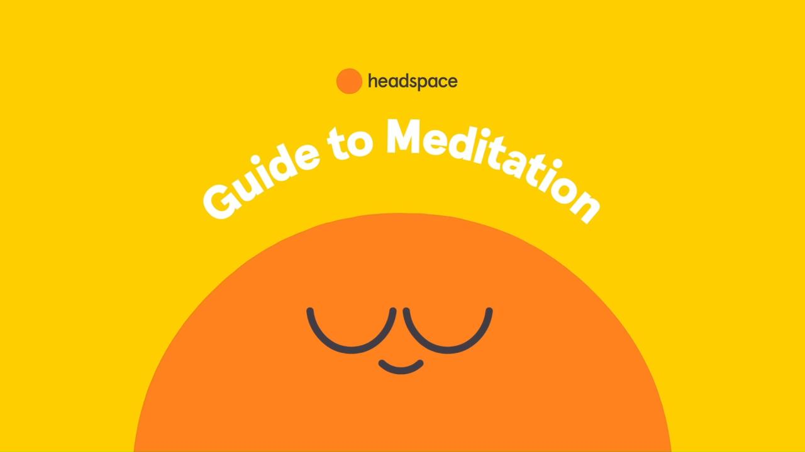
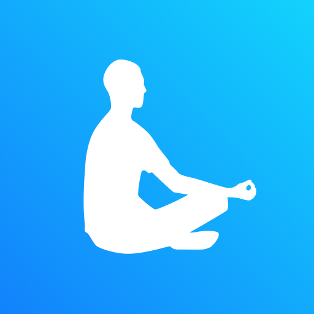
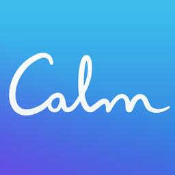
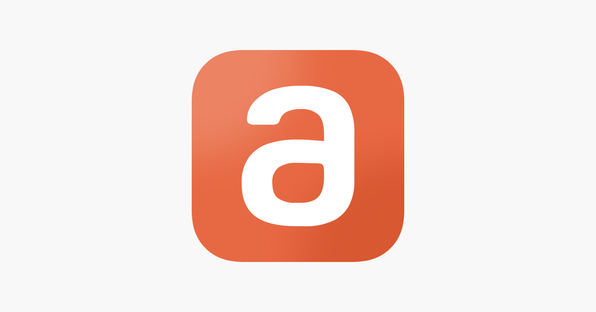
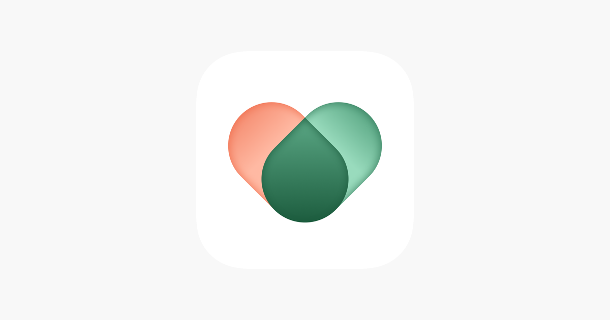
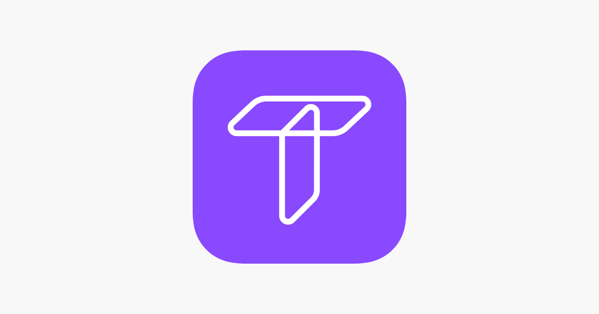

-

Headspace: Learn to Meditate
Learn to Meditate: A few minutes could change your whole day
Stress less, sleep soundly, and breathe easy. Headspace is your everyday mindfulness and meditation app, helping you introduce self-care, relaxation and tranquility into your everyday life. Be kind to your mind and learn general anxiety relief techniques, ways to manage stress, find your focus, and release tension in both the mind and body.
-

Smiling Mind: Meditation App
Smiling Mind is Australia’s leading digital-led, prevention focussed mental health not-for-profit and the innovators behind Australia’s most trusted mental wellbeing app. The Smiling Mind App is a free tool, developed by psychologists and educators and downloaded by millions of people.
Programs in the app are underpinned by mindfulness and positive psychology strategies and designed to build mental fitness and resilience; support good sleep, study and sports training; reduce stress and improve relationships; and promote the development of new social and emotional skills.
Whether you have half an hour, or just a couple of minutes in the day, you can learn, build and practise the skills to build mental fitness and improve your mental health anytime, anywhere . Find programs tailored for children aged 3 years and older, young people and adults as well as dedicated family programs.
-

Mindfulness App
Feeling overwhelmed or stressed in your everyday life? Want to feel more balanced and more joyful?
Enjoy a more restful sleep, stress less, and reduce your anxiety together with The Mindfulness App. With over 400 guided meditations and courses from experts around the world, we have options for every mood, time of the day, and for everyone from beginners to experienced.
-

Calm
Calm is the #1 app for sleep, meditation and relaxation. Manage stress, balance moods, sleep better and refocus your attention. Guided meditation, Sleep Stories, soundscapes, breathwork and stretching exercises fill our extensive library. Practice self-healing and discover a happier you through Calm.
Feel better by reducing anxiety, prioritizing your self-care and choosing a guided meditation session that fits within your busy schedule. Introduce mindfulness and breathing exercises into your daily routine and experience their life-changing benefits. Meditation novice or seasoned expert, Calm is for anyone who is looking to improve their sleep and address everyday stress.
Sleep better with Sleep Stories, bedtime stories that lull you into a restful slumber. Relaxing sounds and calming music also help you meditate, focus and sleep soundly. Balance your mood and improve your sleep cycle by picking from 100+ exclusive Sleep Stories, narrated by well-known talent like Cillian Murphy, Rosé, and Jerome Flynn. Meditate daily to relieve anxiety and learn to put your personal health first.
Take a deep breath and find your Calm.
-

BetterMe: Mental Health
BetterMe: Self-help meditation for people who can't meditate! 🧘♀️
All you need is few minutes a day to bring yourself to a state of calm and wellness, and balance your life using a combination of guided meditations and techniques. BetterMe's approach is a set of simple, practical relaxation methods for anyone.
You will learn how to manage daily stress and improve your mental health by breathing, which is a natural anti-anxiety therapy. Studies show that meditation can help reduce anxiety, improve sleep and concentration and enhance overall well-being. But to claim these benefits, regular and meaningful practice is key.
-

Amaha: Anxiety Self-Care
A place to help you feel better and stay better, Amaha is built by trained psychologists and licensed psychiatrists. The app will improve your mental health, help you cultivate mindfulness, and sleep better through self-care, therapy, and community support.
-
Wysa: Anxiety, Therapy Chatbot
Wysa is your cute, 'cheer me up' buddy and well being tracker. Wysa is packed with daily spiritual meditation that improves mental health and is also a perfect way to bond over family meditation. It fits right in your pocket and helps you stay emotionally healthy with mood tracking, finding optimism, reframing thoughts (CBT) in friendly chats to help you reduce sadness. Wysa builds your own personalized toolkit with tools to cope better with depression, calm anxiety, resolve sleep issues and support with grief. Wysa has mental health tests and depression tests, which helps you assess yourself symptomatically based on depression tests like PHQ9 and anxiety tests like GAD7.
Wysa is your AI friend that you can chat with for free. You can talk to the cute penguin or use its free mindfulness exercises for effective anxiety relief, depression and stress management. Its therapy based techniques and conversations make for a very cute and calming therapy chat app whether you're looking to cope better with anxiety or to just manage stress. Check in with Wysa regularly to boost your emotional health and mental health.
-

MyPossibleSelf: Mental Health
MyPossibleSelf: Mental Health is a mobile application designed to support individuals in managing their mental well-being. It offers a variety of tools and resources to help users understand, track, and improve their mental health. The app may include features such as mood tracking, guided self-help exercises, cognitive behavioral therapy techniques, relaxation techniques, goal setting, and progress monitoring. Additionally, it may provide educational content on topics related to mental health, such as stress management, anxiety, depression, and resilience. Overall, MyPossibleSelf aims to empower users to take control of their mental health and lead happier, more fulfilling lives.
-
ThoughtFullChat: Mental Health
ThoughtFullChat is an AI-powered mental health chatbot designed to provide support, guidance, and resources to individuals struggling with mental health challenges. It offers a confidential and non-judgmental space for users to express their thoughts and feelings, receive personalized advice, and access coping strategies. ThoughtFullChat may employ techniques from cognitive behavioral therapy (CBT), mindfulness, and positive psychology to help users manage stress, anxiety, depression, and other mental health issues. Through conversation and interaction, the chatbot aims to foster self-awareness, resilience, and emotional well-being in its users.
-

VOS: Mental Health, AI Therapy
VOS (Virtual Online Support): Mental Health, AI Therapy is an innovative platform that utilizes artificial intelligence to provide therapy and support for individuals dealing with mental health issues. Through chat-based interactions, VOS offers a safe and confidential space for users to express their thoughts and emotions. The AI algorithms are trained to provide empathetic responses, offer coping strategies, and guide users through therapeutic techniques such as cognitive behavioral therapy (CBT), mindfulness, and relaxation exercises.
VOS can assist users in managing a wide range of mental health concerns including anxiety, depression, stress, and relationship issues. It adapts to each user's unique needs and preferences, providing personalized support 24/7 without the need for scheduling appointments or waiting for availability.
The platform also offers resources such as articles, videos, and self-help tools to empower users in their mental health journey. VOS aims to complement traditional therapy by providing continuous support and guidance in between sessions, ultimately promoting long-term well-being and resilience.
-

TalkLife: 24/7 Peer Support
TalkLife is an online community and peer support platform that offers 24/7 support for individuals dealing with mental health challenges. It provides a safe and welcoming space for users to share their thoughts, experiences, and feelings with others who may be going through similar struggles.
The platform allows users to connect with peers from around the world in real-time chat sessions or through posts on the community forum. Whether someone is experiencing anxiety, depression, loneliness, or any other mental health issue, TalkLife provides a supportive environment where they can receive empathy, validation, and advice from others who understand what they're going through.
Additionally, TalkLife may have moderators or trained volunteers who monitor the platform to ensure that interactions remain respectful and supportive. Through the power of peer support, TalkLife aims to reduce stigma, promote mental health awareness, and foster a sense of belonging and connection among its users.
-

Evolve: Self-Care & Meditation
Evolve: Self-Care & Meditation is a mobile app dedicated to nurturing mental well-being through self-care practices and mindfulness meditation. Its guided meditation sessions cover various topics, from stress reduction to self-compassion, led by experienced instructors. Alongside meditation, users access tools like breathing exercises, gratitude journaling, and mood tracking, fostering resilience and stress management. With personalized recommendations, Evolve empowers users to craft tailored self-care routines, promoting inner peace and fulfillment in daily life.